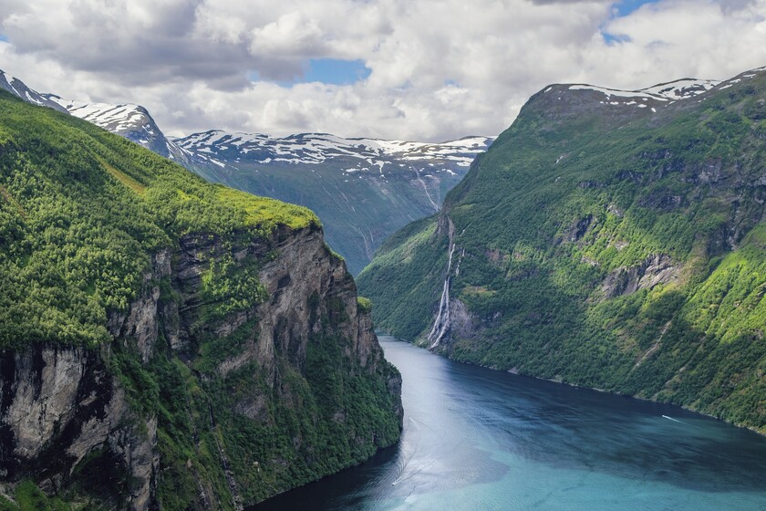
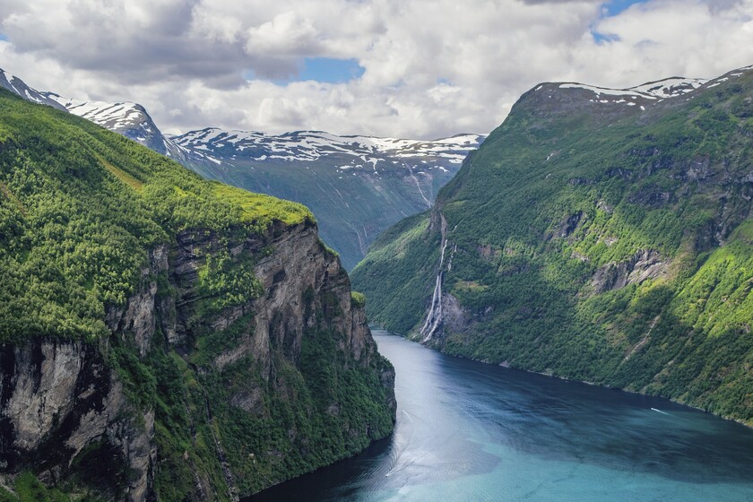

Noruega es esencialmente un país montañoso ya que la mayor parte del territorio continental de Noruega ocupa una estrecha franja litoral al oeste de la península escandinava, delimitado por una extensa frontera natural con Suecia a lo largo de los Montes Kjolen.Eso hace que se formen, también por su clima frío que llegan a tener temperaturas por debajo de los cero grados durante gran parte del año, los famosos fiordos que son lugares turísticos muy visitados.También se pueden visitar una gran cantidad de pueblos pesqueros que encontramos en las inmensas costas de este país.Y su mayor atractivo turístico son las impresionantes auroras boreales que se pueden ver en su plenitud en ciertas zonas del territorio nordico.
Auroras boreales mágicas y montañas majestuosas.Noruega es uno de los pocos lugares del planeta en los que es posible admirar las auroras boreales, donde un cielo ártico infinito y estrellado es el telón de fondo de fascinantes bailes de colores increíbles.Entre finales de septiembre y finales de marzo ,en el Norte de Noruega oscurece a primera hora de la tarde y no hay luz hasta bien entrada la mañana. Es en esta época cuando las auroras boreales suelen cruzar el cielo ártico. Nos atrevemos a afirmar que esta parte de Noruega, con sus incontables islas, profundos fiordos y escarpadas montañas, es uno de los mejores y más bellos lugares para admirar la aurora boreal El lugar de alojamiento para esta experiencia sería Radisson Blu Hotel, un fantástico hotel de auroras boreales en Noruega, el cual ofrece alojamiento y comida durante los dias que estéis alojados allí

En la capital nórdica para empezar el día y conocerla lo mejor sería un recorrido por ella incluyendo el Parque Frogner, con todas las esculturas de Vigeland, el Palacio Real y el Ayuntamiento. También puedes visitar el famoso salto de esquí Holmenkollen, donde obtendrás una vista maravillosa de toda la ciudad y el fiordo.
También está la fortaleza de Akershus es uno de los principales iconos de Oslo, y posiblemente de Noruega. Situada a orillas del fiordo, desde lo alto de sus murallas las vistas son estupendas. Pero en su interior oculta mucho más de lo que podrías imaginar. Y para finalizar ir a los fiordos para contemplar una maravillosa vista.
 

Canción folclórica tradicional en Noruega
Hoteles de referencia por la zona de Oslo